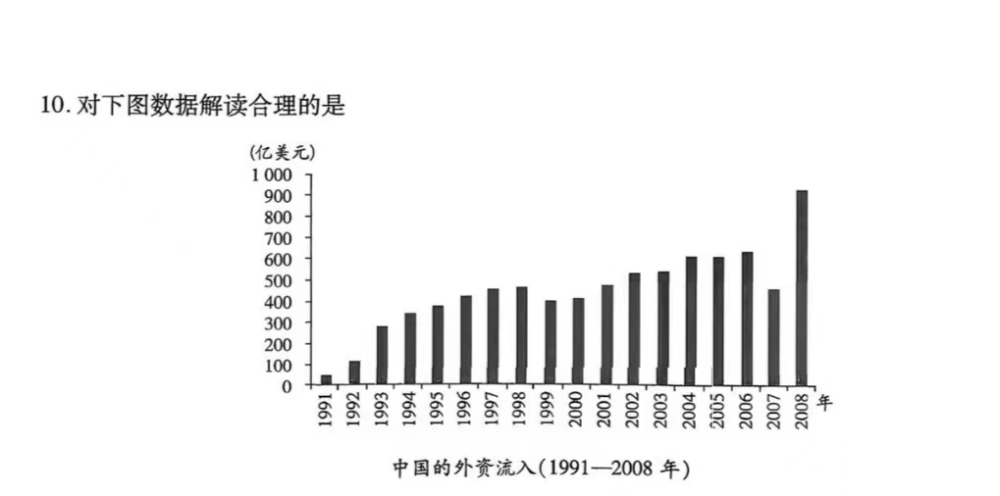
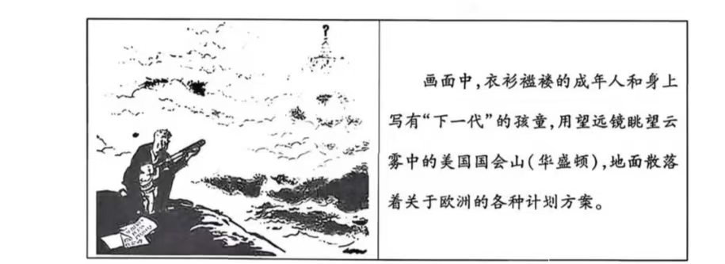

历 史
本题共16小题，每小题3分，共48分。在每小题给出的四个选项中，只有一项是符合题目要求的。
正确答案：A
解析：三星堆遗址出土了中原青铜礼器系统中常见的尊和罍，同时出土的玉璋、玉璧、玉琮等玉器在中原文化中也同样作为礼器使用。这些共同的文化元素表明，巴蜀文明与中原文明存在一定程度的联系，A项正确。材料并未涉及三星堆的器物或文化对外输出或对中华文明整体作了何种贡献，排除B项；材料仅体现巴蜀文明与中原文明存在文化交流与机制上的相通性，无法判断是巴蜀文明影响中原礼乐制度，排除C项；D项夸大了巴蜀文明的地位，排除。
正确答案：D
解析：布币作为交换媒介的跨区域使用，反映出区域经济联系密切，D项正确。材料只涉及货币形状与农具的相似性，不能由此推断农业生产工具的实际使用状况，排除A项；"布币在多个诸侯国流通"这一现象无法直接证明商业繁荣，排除B项；材料说明各国仍然自主铸造货币，并未实现货币的统一，排除C项。
正确答案：D
解析：由材料可知，唐朝科举考试科目从"试策"到"加杂文""填帖"，内容从单一走向多元，难度提升且考试内容范围扩大，表明科举制对考生的知识结构和能力要求不断提高，D项正确。科举考试内容的增加，是考试内容丰富化的表现，而非僵化，排除A项；材料未涉及科举选拔范围的变化，排除B项；材料未涉及考试程序相关信息，排除C项。
正确答案：C
解析：由材料可知，宋代服饰审美推崇素雅、克制、内敛，并以"道""儒风"作为评判标准，这正是理学强调崇尚简约内敛的价值观念在社会生活与审美上的体现，C项正确。商品经济繁荣通常伴随着服饰的多样化、华丽化，素雅、朴素的审美趋向与商品经济的推动作用方向相反，排除A项；材料反映的审美观念并非士人阶层的单个行为，而是整个社会受理学思想影响的结果，且服饰色彩流行素雅，不等于审美保守，排除B项；材料只涉及色彩风格，未体现服饰的等级身份差异，排除D项。
正确答案：B
解析：由材料可知，明代中央通过巡按御史制度，对地方官员的履职情况进行监督、考核与处置，这是中央通过监察系统，加强对地方官员的考核与控制，强化了中央对地方的管控，B项正确。荐举与弹劾属于监察范畴，与"行政决策效率"无直接关联，排除A项；材料仅体现巡按御史正常行使荐举与弹劾的职权，并未表明其滥用权力、超越权限，排除C项；巡按御史是中央政府派出的监察官，不能体现地方各权力部门之间的相互制衡，排除D项。
正确答案：D
解析：由材料可知，20世纪初政府规定以爵位奖励实业，体现出国家政策重心的转变，从军功优先转向实业优先，表明国家从轻视商业转向鼓励发展工商业，这直接冲击了传统的抑商观念，D项正确。材料主旨是爵位赏赐，而非选官制度，排除A项；奖励实业与爵位赏赐的目的是鼓励兴办实业、发展经济，B项并非这一政策的直接影响，排除；商人获得爵位只是社会等级地位局部变动，并未从根本上打破社会等级结构，排除C项。
正确答案：A
解析：材料反映了中华民国成立后，处于新旧社会交替、政权更迭的阶段，民众的观念尚未统一，旧的皇权意识与传统纪年习惯仍然存在，新的民国纪年尚未完全普及。这正是社会转型期新旧观念并存、交替、碰撞的表现，A项正确。"深入人心"与材料主旨不符，排除B项；"竟有仍将宣统排"表明传统纪年仍在使用，排除C项；材料中多种纪年并存说明历法改革并未完全被民间统一接受，排除D项。
正确答案：B
解析：材料中的剧目由战士创作，为战士演出，"上战场""庆功"等内容贴近部队生活与战争实际，服务于战前动员，能激励战斗士气。这说明当时的文艺活动不是脱离现实的消遣，而是结合战争需要，服务于提高部队战斗力、纪律建设、鼓舞士气的现实任务，B项正确。材料只提及快板剧、小节目等形式，并未展示多种不同类型、风格或题材的文艺作品，无法体现文艺创作多元化，排除A项；材料未涉及中国共产党与其他阶级、党派、团体的联合，排除C项；材料仅反映军队内部文艺活动，"全面提升"表述夸大，排除D项。
正确答案：C
解析：根据材料并结合所学知识可知，1956年我国基本完成了社会主义改造，国家工作重心转向大规模经济建设，第一个五年计划正在实施。工业化建设迫切需要大量科学技术人才和科技创新成果，将知识分子定位为"工人阶级的一部分"，是为了调动知识分子的积极性，使其更好地服务于工业化和科技发展，C项正确。"双百"方针于1956年4月正式提出，排除A项；"科教兴国"战略于1995年提出，与材料时间不符，排除B项；国民经济调整（"调整、巩固、充实、提高"八字方针）是在1961年提出的，排除D项。

正确答案：B
解析：根据材料并结合所学知识可知，1992年邓小平南方谈话进一步破除思想束缚，推动对外开放深化，促进1992—2008年外资流入持续增长，B项正确。农村改革与外资流入无直接关联，排除A项；城市经济体制改革主要是增强国内企业活力，与外资流入关系不大，排除C项；材料未体现科技创新因素，排除D项。
正确答案：B
解析：古埃及人把不符合埃及地理认知的河流称为"倒流的河"，说明他们以自我为中心看待外部世界，地理观念带有局限性，缺乏客观、科学的外部认知，B项正确。材料未涉及埃及与其他文化的交流、互动或吸收外来文化的内容，排除A项；古埃及文明是典型的大河文明（尼罗河），且材料并未体现海洋文明的影响，排除C项；D项与材料主旨相悖，排除。
正确答案：A
解析：由材料可知，中世纪西欧图书制作以手抄为主，使用羊皮纸作为书写材料，制作过程费时费力，成本高昂，且图书馆藏书量很少，这体现出书籍生产的低效率、高成本，制约了知识在社会中的传播，A项正确。材料只反映了图书生产方式和藏书规模，排除B项；材料未涉及东西方之间的技术交流，排除C项；材料中巴黎大学藏书量少，无法说明其是"文化传播中心"，排除D项。
正确答案：C
解析：材料观点明确反对将中世纪与文艺复兴时期视为截然断裂的两个时期，而是强调中世纪的文化、思想传统在文艺复兴时期乃至更晚的时期仍然延续存在。因此，该学者强调的是历史发展的延续性，C项正确。材料并未否定文艺复兴的进步性，只是表明历史发展的延续性，排除A项；材料讨论的是中世纪与文艺复兴时期之间的关系，并未涉及宗教改革，排除B项；材料强调中世纪与文艺复兴时期之间的延续性，未提及该学者对传统史学分期理论的修正，排除D项。
正确答案：D
解析：18世纪英国工业革命对原棉需求暴增，而美国南方适宜种植棉花，且以黑奴劳动力为基础。英国巨大的棉花需求直接刺激美国南方大规模扩大棉花种植，推动种植园经济快速发展，D项正确。南北战争爆发于1861年，与材料时间不符，排除A项；资本主义工商业主要在美国北方，材料指向棉花原料供应，与南方种植园更直接相关，排除B项；材料体现的是英国需求带动美国内部棉花生产，并非美国对外殖民掠夺，排除C项。

正确答案：B
解析：二战后欧洲经济凋敝、民生困苦，漫画中欧洲民众衣衫褴褛、眺望华盛顿，旁边的地面散落欧洲重建计划，但国会山顶部的问号以及云雾重重，折射出美国态度不明，集中反映出战后欧洲迫切希望得到美国援助的期待与现实困境，B项正确。漫画重点不是展示战争的惨状，而是表现欧洲人眺望华盛顿、渴望援助的行为，排除A项；漫画未体现区域协作，重点是对美关系，排除C项；漫画重点是欧洲对美国的期待与担忧，而非整体国际局势的不确定，排除D项。
| 国家或地区 | 1960年 | 1973年 | 1991年 | 2016年 | 2023年 |
|---|---|---|---|---|---|
| 美国 | 31 | 27.8 | 26.8 | 24 | 23.6 |
| 美加墨 | 34.9 | 32 | 31 | 27.6 | 27 |
| 欧盟27国 | 27.8 | 27.8 | 25.4 | 17.9 | 16.6 |
| 中国 | 1.4 | 1.3 | 3.1 | 15.2 | 18.4 |
| 中日韩 | 7 | 10.1 | 14.3 | 22.9 | 25.2 |
| RCEP15国 | 10.3 | 13.3 | 18.4 | 28.4 | 30.8 |
注：RCEP即《区域全面经济伙伴关系协定》，是由中国、日本、韩国、澳大利亚、新西兰及东盟十国共15个成员国签署的全球最大自由贸易协定。
答案解析正确答案：C
解析：由材料可知，美国、欧盟占世界GDP比重持续下降；中国、中日韩、RCEP15国（亚太地区）所占比重显著上升，这一趋势直观反映出世界经济重心逐步向亚太地区转移，C项正确。RCEP等区域合作正是全球化深化的表现，排除A项；RCEP（亚太区域经济贸易协定）的份额从10.3%上升至30.8%，实力显著增强，排除B项；材料未涉及全球治理模式，排除D项。
本题共4小题，共52分。
材料 魏晋南北朝时期，是秦汉早期法律制度向隋唐成熟期法律制度过渡的重要阶段。三百多年里，每个政权几乎都进行过立法活动，主要有三国时期魏国的《魏律》，西晋的《泰始律》，北魏的《北魏律》，北齐的《北齐律》。这一时期涌现出众多的律学家，如陈群、钟繇、王朗、刘劭、杜预、张斐等。
《魏律》在大规模地整理秦汉旧律的基础上，根据当时具体的社会经济政治情况，增加九篇。魏晋在司法审判中，仍然沿袭汉时以《春秋》经义断案的传统，西晋《泰始律》确立的"准五服以制罪"制度，更是直接将儒家伦理引入量刑标准。西晋《泰始律》由张斐、杜预作注，注释与律文具有同等法律效力。北魏孝文帝多次修律，亲自执笔定刑。《北齐律》以《魏律》为基础修订而成，将《刑名》与《法例》合为《名例律》，作为法典总则，体例更为严谨。
——摘编自张晋藩《中国法制史》等
参考答案：
特点：承上启下；法律成果丰富；法律人才众多；体例兼备；儒法融合；注重法律解释；统治者重视。（每点2分，任答三点即可，其他答案言之有理亦可得分）
参考答案：
影响：稳定了社会秩序；推动了礼法进一步结合；完善了法典体例；为隋唐法制完备奠定了基础；对后世律法影响深远。（每点2分，任答三点即可，其他答案言之有理亦可得分）
材料一 1941—1943年，日军集中重兵对冀鲁豫抗日根据地反复实施"扫荡""蚕食"，推行"治安强化运动"，妄图摧毁敌后抗日根据地，控制中原战略要地。冀鲁豫抗日根据地通过开展大生产运动，按照"三三制"进行民主选举等，保障了军需民用物资供给。冀鲁豫军区部队联合地方抗日武装，在根据地群众大力支援下，深挖地道、修筑防御工事，广泛开展麻雀战、破袭战、伏击战；采取内线坚持与外线出击相结合的战术，主力部队与地方部队相配合等多种方式，组建游击支队，整训地方武装，多次粉碎日伪军的军事进攻，巩固了根据地的生存与发展。
——摘编自王全营等《河南抗日战争史》
材料二 冀鲁豫抗日根据地横跨河北、河南、山东三省广大平原一百余县，是联接华中、华东、华北和延安的交通枢纽，也是党在华北敌后打击日本侵略者的重要战场之一。作为华北抗战的重要战略支点，牵制和消耗了日伪军数十万兵力，粉碎了上百次"扫荡"，同时依托地缘优势，转运兵员、传递情报、输送战略物资，有力支援了全国抗战大局。根据地还培养和锻炼了大批优秀的干部和武装力量，这些干部和战士在抗战胜利后，又积极投身到解放战争和新中国的建设中，为国家独立和民族复兴继续贡献力量。
——摘编自《冀鲁豫抗日根据地》等
参考答案：
原因：中国共产党的正确领导；人民军队的英勇抗战；人民群众的大力支持；战术灵活，地方部队与主力部队相配合；坚持全面抗战路线；加强抗日根据地建设。（每点2分，任答三点即可，其他答案言之有理亦可得分）
参考答案：
作用：牵制、打击了大量华北日军；保障了根据地之间的战略联络；支援和配合了全国抗战；培养了大批优秀的干部和武装力量。（每点2分，任答四点即可，其他答案言之有理亦可得分）
材料一 到1824年，拉丁美洲人民已基本上赢得了民族解放，但是独立后的拉美仍然保持着传统的单一产品出口的经济结构，因此无力彻底摆脱对外的依附地位。英国制成品的大量输入，摧毁了拉美建立在原始技术基础上的地方初级工业。在英国格拉斯哥制造的美洲毛料被风，在墨西哥的价格比当地手工业制作的产品更便宜。1825—1827年，英国向拉美出口商品年均达6600万英镑，拉美向英国提供的产品主要是蔗糖、咖啡、棉花、羊毛、烟草和各种矿产品。英国又通过提供贷款来控制新生国家，到19世纪50年代，英国提供的贷款和直接投资已达1亿英镑左右。
——摘编自刘文龙、朱鸿博《西半球的裂变》
材料二 到1835年，英国大多数的新兴工业城镇无法提供诸如公共安全、水务与污水治理或垃圾处理等基本城市服务。新兴城市毫无生气，工人宿舍都是匆忙搭建的，拥挤不堪，工人通常每天都要工作14小时。工厂内没有歌声与交谈声，也无欢笑声，整个工厂内鸦雀无声。工人的工资极低，无法养家糊口，孩子们通常不得不在工厂内工作，他们当中有些只有6岁。19世纪英国工人阶级艰苦恶劣的生活被刻画在狄更斯的作品中，如《雾都孤儿》和《艰难时世》。
——摘编自[美]大卫·S·梅森《现代欧洲200年》
参考答案：
主要方式：对外扩张与掠夺；抢占原料产地和商品市场；资本输出；对内压榨与剥削；降低生产成本，维持价格竞争力。（每点2分，任答四点即可，其他答案言之有理亦可得分）
参考答案：
影响：造成了不平等的国际关系；推动了世界市场的初步形成；确立了资本主义全球扩张的模式；引发了早期工人运动。（每点2分，任答三点即可，其他答案言之有理亦可得分）
材料 马克思的交往理论，是马克思社会发展理论的重要内容之一。马克思所说的"交往"，既有范围上的从民族交往到世界交往，只有这种交往才能真正克服"狭隘地域"的局限，扩大人们的世界历史视野；又有内容上的物质交往和精神交往，物质交往具有决定性的意义，是精神交往的基础和前提。
——摘编自钱乘旦《新世界史纲要》
参考示例：
论题：世界交往推动了人类社会的整体发展。
阐述：世界交往从空间上推动了各地区由相对孤立走向整体，在内容上既有物质交换，又有精神文化的交流，推动了人类文明的交融与进步。
新航路开辟前，世界各地区处于相对孤立的状态，交往多局限于相邻民族或区域内部。新航路开辟后，世界各大洲之间建立起直接的联系，开始连为一个整体，世界交往的范围从民族、区域层面拓展为全球性交往。工业革命后，火车、汽船、飞机等新式交通工具的出现，进一步缩短了时空距离，世界交往的规模和速度都大幅提升，真正突破了"狭隘地域"的局限。同时，欧亚大陆的马、牛、羊、小麦、燕麦等，美洲的玉米、辣椒、番茄、花生等通过全球贸易网络传播到世界各地。伴随人员、商品的流通，欧洲的思想文化、科学技术，如启蒙思想、近代自然科学等也传播到亚非拉地区，实现了世界各地区的文化、技术等交流与传播，这是精神交往在物质交往基础上的延伸。
总结：世界的交往，深刻影响了人类社会的发展轨迹，推动了全球文明的双向互动与进步。今天的世界，同样需要消除隔阂，加强彼此之间的交往、交流，共同推动人类美好的明天。
评分标准：
| 等级 | 评分标准 |
|---|---|
| 一等（9~12分） | ①观点明确，能充分应用相关史实，史实准确 ②论证严密，阐述逻辑清晰 ③总结清楚 |
| 二等（5~8分） | ①观点明确，能应用相关史实，史实较准确 ②论证较严密，阐述逻辑较清晰 ③总结较清楚 |
| 三等（0~4分） | ①观点不明确，运用相关史实不够准确或者不能够运用 ②论证不严密，阐述逻辑不清晰 ③总结不清楚 |